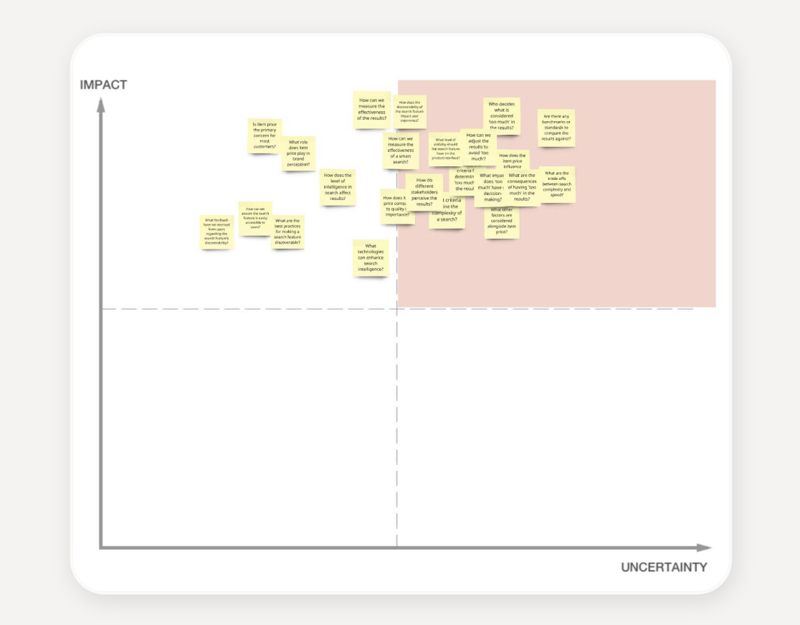

Smart Dish Search
Enhancing choice without complexity. As Just Eat’s variety exploded, customers couldn’t find what they were craving — so I led search from a blank brief to a phased vision, reframing it from “match a dish” to “understand a craving.”
More choice was making Just Eat harder to use, not easier.
Choice is what our data said customers valued most. But as the platform added restaurants and dishes, finding the right one got harder — and search only matched restaurant names, not what was on the menus. If you fancied a specific dish, you had to open menu after menu to hunt for it.
Competitors had once solved this; losing it felt, to customers, like a downgrade. And search wasn’t a side feature — it already drove the most order-generating sessions on the platform, and people who searched successfully converted far better than those who didn’t.
“I have to open 13 menus one by one to check. It only searches the name of the place, not the contents of the menus.”
I broke the problem to first principles — and what we found changed the brief.
Rather than accept “people want to search for a dish,” I partnered with researchers to declare our assumptions out loud and test them. Several came back as fundamental truths about how people actually decide what to eat:
So I reframed the problem the whole team would now solve:
“People want to easily discover food that matches their cravings — through search, recommendations, or contextual nudges.”
My job as UX Lead was less about screens, more about direction and de-risking.

A phased path to the North Star — shippable now, ambitious later.
I structured the vision in three phases so we could deliver value immediately while building toward an experience that understands intent. Phase 3 answers the truth that cravings are sparked by mood, social and trends — turning a moment of inspiration into an order.
A small first release, a measurable win — and momentum for the rest.
Engineering effort forced a trade-off: ship the discoverability changes now, or wait and launch predictive search too. I argued for shipping early — even a minimal release would improve the experience and build visibility for the feature. It paid off: the MVP lifted good-order conversions, and predictive search compounded the gain. Phases 2 and 3 are now in engineering handover.
“The biggest lesson: how to align a cross-functional team on a single vision — and not stop at the MVP.”